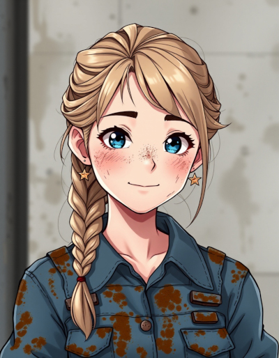

| Name | Amelia Blackwell |
|---|---|
| Known Aliases | None |
| Title/Rank | Starship Captain (Starwitch) |
| Birthplace |
Village of Daleshade Cakana (Moon of Junas) |
| Occupation |
Engineer Witch Military Contractor (Dugaria) Courier (Space) |
| Relationships |
Erika Blackwell (Mother) Iris Blackwell (Sister) Marta Blackwell (Sister) Tim Blackwell (Father) The Dead Queen (Enemy) |
| Appearances |
Novels |
Amelia Blackwell
Amelia Blackwell is the primary protagonist in the series The Book of Newts. She’s the owner of the magic book that gives the series its name.
She’s a small woman with dirty blond hair that ranges from short to mid-back, depending on events of the story. She’s Caucasian, with blue eyes. During the opening scene of Starwitch, she’s about 23 years old.
In general, she’s friendly and helpful to others. It’s extremely rare for her to not think of others before herself, a habit ingrained into her during her childhood, by her mother, Erkia Blackwell.
She was raised as a total pacifist by her mother, but over the course of the first novel, she begins to embrace a more practical philosophy of using violence only for self-defense and the greater good.
She’s a engineer, with a deep love for building machines of all sorts and tends to get particularly excited about her projects.
She has a fondness for designing, building and modifying vehicles, including horseless carriages, a pair of fixed wing airplanes she named Blackbird and Blackbird II, an airship named Airwitch and last, but not least, a rocket-style star ship named Starwitch.
She occasionally dabbles in designing custom weaponry. She also continually experiments with making new tools of her own design.
Despite the fact she’s clearly a genius, with an incredible mind for numbers, she’s fairly humble about it, at least until someone tries to throw legal hurdles in her way. At that point, her habit of voraciously reading everything she can get her hands on becomes rather terrifying, because she has a sharp enough intellect to confidently argue about the law, usually to the detriment of those trying to use it as a hammer to beat her down.
Amelia is also witch, but her magic powers are extremely weak. However, she makes up for that by wielding magic with extreme precision. For example, her range with scrying spells is rather pathetic, reaching only inches away, but when employing such spells, she can see microscopic detail.
One of Amelia’s favorite areas of study is enchanting, which allows her to combine machines with magic, via runes. Her first big success in this area was a steam engine that used runes to heat water, rather than a firebox, which made the engine far more compact.
During her time in the militant nation of Dugaria, she was drafted into the military and forced to become a military contractor, given the job of developing a war wagon for the King. Instead, Amelia secretly built Starwitch as the means for her family to escape their forced military service.